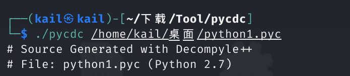

感觉好久没有好好做过 CTF 了，想念那种坐牢的感觉了（楽🙇♀️
第一次认真接触算是在省赛的时候吧，当时给的是一个 exe 类型的文件，通过 pyinstaller 将它转变成 .pyc 文件之后由于没有工具可以把它变成 .py 文件，也不知道有 dis 这个库可以将 pyc 文件转换成 python汇编，所以当时就 g 掉了。
省赛连续两年都出了相关的题目，是得了解一下了
python 汇编
pyc 是二进制文件，可以直接由 python 虚拟机来执行。显而易见，这种玩应我们是看不懂的，通过一些工具，例如：uncompyle6。通过命令 uncompyle6 -o xxxx.py xxxx.pyc 就可以将 pyc 文件直接转换为 py 文件，那逆向难度就直接降低了，只要看懂 py 文件就可以了。但是这都是最理想的状态，如果我们对 pyc 文件进行一些防止反编译的操作 导致 uncompyle6 没有办法工作，那么我们就只能通过分析 python 汇编还原出基本的 py 文件。
通过 python 中的 dis 模块，可以将 pyc 文件转换为 python 汇编
1 2 3 4 5 6 7 8 9 10 11 12 13 14 15 2 0 LOAD_CONST 1 ('1234abcd') 2 STORE_FAST 0 (str) 3 4 LOAD_GLOBAL 0 (range) 6 LOAD_FAST 0 (str) 8 CALL_FUNCTION 1 10 GET_ITER >> 12 FOR_ITER 6 (to 26) 14 STORE_FAST 1 (i) 4 16 LOAD_GLOBAL 1 (print) 18 LOAD_FAST 1 (i) 20 CALL_FUNCTION 1 22 POP_TOP 24 JUMP_ABSOLUTE 6 (to 12)
句子的结构如下
1 源码行号 | 指令在函数中的偏移 | 指令符号 | 指令参数 | 实际参数值
纯 python 逆向
很简单的一个 py 文件逆向，直接对照 py 文件写出相对应的 exp 即可
1 2 3 4 5 6 7 8 9 10 11 12 print 'Welcome to Re World!' print 'Your input1 is your flag~' l = len(input1) for i in range(l): num = ((input1[i] + i) % 128 + 128) % 128 code += num for i in range(l - 1): code[i] = code[i] ^ code[(i + 1)] print code code = ['\x1f', '\x12', '\x1d', '(', '0', '4', '\x01', '\x06', '\x14', '4', ',', '\x1b', 'U', '?', 'o', '6', '*', ':', '\x01', 'D', ';', '%', '\x13']
exp
1 2 3 4 5 6 7 8 9 10 11 12 13 14 code = ['\x1f', '\x12', '\x1d', '(', '0', '4', '\x01', '\x06', '\x14', '4', ',', '\x1b', 'U', '?', 'o', '6', '*', ':', '\x01', 'D', ';', '%', '\x13'] code = [ord(x) for x in code] for i in range(len(code)-2, -1, -1): code[i] ^= code[i+1] # code[i] = code[i]%128 for i in range(len(code)): code[i] -= i if code[i] < 0: code[i] += 128 code[i] = code[i]%128 print(code) print("".join([chr(x) for x in code]))
使用工具进行反编译
在前面的 python 汇编里简单介绍了 uncompyle6 的使用，这里介绍另一个工具 pycdc
通过命令下载 pycdc，或者直接下载 zip 包解压
1 git clone https://github.com/zrax/pycdc.git
执行命令安装 cmake
进入下载 \ 解压缩的文件夹中，执行命令生成 CMakeFiles
之后就可以利用 pycdc 对 pyc 文件进行反编译了
就可以得到 python 原始代码了，得到原始代码之后的操作步骤就和上面的纯 python 逆向一样了

geek大挑战2020_python1，反编译之后得到的原始代码如下
1 2 3 4 5 6 7 8 9 10 11 12 13 14 15 16 17 18 19 20 21 22 23 24 25 26 27 28 29 30 31 32 33 34 35 36 37 38 39 40 41 42 43 44 45 46 import struct import time def b(a): return a & 0xFFFFFFFFFFFFFFFF def c(str): return struct.unpack('<Q', str)[0] def d(a): for i in range(64): a = a * 2 if a > 0xFFFFFFFFFFFFFFFF: a = b(a) a = b(a ^ 0xB0004B7679FA26B3) continue return a if __name__ == '__main__': cmp_data = [ 0x6E8DD76D3B876F95, 0xE206DA09DAF4BED6, 0x77559D346E134BF1, 0x61CE39CAC5EAF891, 0x656C3C155520E36F] input = raw_input('plz input your flag:') if len(input) % 8 != 0: for i in range(8 - len(input) % 8): input += '\x00' arr = [] for i in range(len(input) / 8): value = d(c(input[i * 8:i * 8 + 8])) arr.append(value) for i in range(5): if arr[i] != cmp_data[i]: print 'fail' time.sleep(5) exit() continue print 'success' time.sleep(5) exit()
个人觉得 pycdc 比 uncompyle6 更加友好，反编译的内容和精确度也更胜一筹👍
这道 python 逆向的难点就在于加密的时候看起来好像是没有判断是否有进入过函数 d(a) 的 if 语句中的，但实际上，如果有经过这个 if 分支，那么出来的数字就必定为奇数，如果没有，那么出来的数字就必定为偶数。
按照这个理论，我们就可以编写出 exp
1 2 3 4 5 6 7 8 9 10 11 12 13 14 15 16 17 18 19 20 21 22 23 24 25 26 import struct def re_d(a): for _ in range(64): if (a%2 == 1): # 若为奇数 tmp = a ^ 0xB0004B7679FA26B3 a = tmp + 0xFFFFFFFFFFFFFFFF + 1 a = a//2 return a cmp_data = [ 0x6E8DD76D3B876F95, 0xE206DA09DAF4BED6, 0x77559D346E134BF1, 0x61CE39CAC5EAF891, 0x656C3C155520E36F] flag = "" for i in cmp_data: tmp = re_d(i) print(hex(tmp)) flag += struct.pack('<Q',tmp).decode("utf-8") print("flag:",flag)
python 汇编还原 py 文件
当然了，上面都是最理想的一种状态因为可以直接得到 py 文件，下面来说说通过 python 字节码还原 py 文件。
上面也已经介绍了 python 汇编语句的格式，也有文章 将 python 汇编各种语言类型进行了总结，以及官网 dis 模块也给出了字节码指令的解释，对照着这些就可以将 pyc 文件所转换的 python 汇编还原成 py 文件。
下面对一个例子进行逐句分析
1 2 3 4 5 6 7 8 9 10 11 12 13 14 15 16 17 18 19 20 21 22 23 24 25 26 27 28 29 30 31 32 33 34 35 36 37 38 39 40 41 42 43 44 45 46 47 48 49 50 51 52 53 54 55 56 57 58 59 60 61 62 63 64 65 66 67 68 69 70 71 72 73 74 75 76 77 78 79 80 81 82 83 84 85 86 87 88 89 90 91 92 93 94 95 96 97 98 99 100 101 102 103 104 105 106 107 108 109 110 111 112 113 114 115 116 117 118 119 120 121 122 123 124 125 126 127 128 129 130 131 132 133 134 135 136 137 138 139 140 141 142 143 144 145 146 147 148 149 150 151 152 153 154 155 156 157 158 159 160 161 162 163 164 165 166 167 168 169 170 171 172 173 174 1 0 LOAD_CONST 0 (<code object keyinit at 0x0000028C1CC11D20, file "crackPYC.py", line 1>) //载入函数内容 2 LOAD_CONST 1 ('keyinit') 4 MAKE_FUNCTION 0 //定义函数 6 STORE_NAME 0 (keyinit) //存储函数 8 8 LOAD_NAME 1 (__name__) 10 LOAD_CONST 2 ('__main__') 12 COMPARE_OP 2 (==) 14 POP_JUMP_IF_FALSE 250 // if __name__ =='__name__' 9 16 LOAD_NAME 2 (print) 18 LOAD_CONST 3 ('Can you crack pyc?') 20 CALL_FUNCTION 1 22 POP_TOP // print('Can you crack pyc?') 10 24 LOAD_NAME 3 (input) 26 LOAD_CONST 4 ('Plz give me your flag:') 28 CALL_FUNCTION 1 30 STORE_NAME 4 (str) // str=input('Plz give me your flag:') 11 32 LOAD_CONST 5 (108) 34 LOAD_CONST 6 (17) 36 LOAD_CONST 7 (42) 38 LOAD_CONST 8 (226) 40 LOAD_CONST 9 (158) 42 LOAD_CONST 10 (180) 44 LOAD_CONST 11 (96) 46 LOAD_CONST 12 (115) 48 LOAD_CONST 13 (64) 50 LOAD_CONST 14 (24) 52 LOAD_CONST 15 (38) 54 LOAD_CONST 16 (236) 56 LOAD_CONST 17 (179) 58 LOAD_CONST 18 (173) 60 LOAD_CONST 19 (34) 62 LOAD_CONST 20 (22) 64 LOAD_CONST 21 (81) 66 LOAD_CONST 22 (113) 68 LOAD_CONST 15 (38) 70 LOAD_CONST 23 (215) 72 LOAD_CONST 24 (165) 74 LOAD_CONST 25 (135) 76 LOAD_CONST 26 (68) 78 LOAD_CONST 27 (7) 12 80 LOAD_CONST 28 (119) 82 LOAD_CONST 29 (97) 84 LOAD_CONST 30 (45) 86 LOAD_CONST 31 (254) 88 LOAD_CONST 32 (250) 90 LOAD_CONST 33 (172) 92 LOAD_CONST 34 (43) 94 LOAD_CONST 35 (62) 96 BUILD_LIST 32 98 STORE_NAME 5 (text) // text=[108, 17, 42, ... , 172, 43, 62] 13 100 LOAD_NAME 6 (len) 102 LOAD_NAME 4 (str) 104 CALL_FUNCTION 1 106 LOAD_CONST 36 (32) 108 COMPARE_OP 3 (!=) 110 POP_JUMP_IF_TRUE 140 // if(len(str) != 32) 112 LOAD_NAME 4 (str) 114 LOAD_CONST 37 (0) 116 LOAD_CONST 27 (7) 118 BUILD_SLICE 2 120 BINARY_SUBSCR // TOS = str[0:7] 122 LOAD_CONST 38 ('DASCTF{') 124 COMPARE_OP 3 (!=) 126 POP_JUMP_IF_TRUE 140 // if(TOS != 'DASCTF{') 128 LOAD_NAME 4 (str) 130 LOAD_CONST 39 (31) 132 BINARY_SUBSCR // TOS = str[31] 134 LOAD_CONST 40 ('}') 136 COMPARE_OP 3 (!=) 138 POP_JUMP_IF_FALSE 154 // if(TOS != '{') 14 >> 140 LOAD_NAME 2 (print) 142 LOAD_CONST 41 ('Bye bye~~') 144 CALL_FUNCTION 1 // print('Bye bye~~') 146 POP_TOP 15 148 LOAD_NAME 7 (exit) 150 CALL_FUNCTION 0 152 POP_TOP // exit() 16 >> 154 LOAD_NAME 8 (list) 156 LOAD_NAME 4 (str) 158 CALL_FUNCTION 1 160 STORE_NAME 9 (st) // st = list(str) 17 162 BUILD_LIST 0 164 STORE_NAME 10 (key) // key = [] 18 166 LOAD_NAME 0 (keyinit) 168 LOAD_NAME 10 (key) 170 CALL_FUNCTION 1 172 POP_TOP // key = keyinit() 19 174 SETUP_LOOP 48 (to 224) 176 LOAD_NAME 11 (range) 178 LOAD_CONST 36 (32) 180 CALL_FUNCTION 1 182 GET_ITER >> 184 FOR_ITER 36 (to 222) 186 STORE_NAME 12 (i) // for i in range(32) 20 188 LOAD_NAME 13 (ord) 190 LOAD_NAME 4 (str) 192 LOAD_NAME 12 (i) 194 BINARY_SUBSCR 196 CALL_FUNCTION 1 // TOS = ord(str[i]) 198 LOAD_NAME 10 (key) 200 LOAD_NAME 12 (i) 202 LOAD_NAME 6 (len) 204 LOAD_NAME 10 (key) 206 CALL_FUNCTION 1 // TOS = len(key) 208 BINARY_MODULO // TOS = i % len(key) 210 BINARY_SUBSCR // TOS = key[i % len(key)] 212 BINARY_XOR // TOS = ord(str[i]) ^ key[i % len(key)] 214 LOAD_NAME 9 (st) 216 LOAD_NAME 12 (i) 218 STORE_SUBSCR // st[i] = ord(str[i]) ^ key[i % len(key)] 220 JUMP_ABSOLUTE 184 >> 222 POP_BLOCK 21 >> 224 LOAD_NAME 9 (st) 226 LOAD_NAME 5 (text) 228 COMPARE_OP 2 (==) 230 POP_JUMP_IF_FALSE 242 // if(st == text) 22 232 LOAD_NAME 2 (print) 234 LOAD_CONST 42 ('Congratulations and you are good at PYC!') 236 CALL_FUNCTION 1 // print('Congratulations and you are good at PYC!') 238 POP_TOP 240 JUMP_FORWARD 8 (to 250) 24 >> 242 LOAD_NAME 2 (print) 244 LOAD_CONST 43 ('Sorry,plz learn more about pyc.') 246 CALL_FUNCTION 1 // print('Sorry,plz learn more about pyc.') 248 POP_TOP >> 250 LOAD_CONST 44 (None) 252 RETURN_VALUE Disassembly of <code object keyinit at 0x0000028C1CC11D20, file "crackPYC.py", line 1>: 2 0 LOAD_CONST 1 (0) 2 STORE_FAST 1 (num) //num=0 3 4 SETUP_LOOP 42 (to 48) 6 LOAD_GLOBAL 0 (range) 8 LOAD_CONST 2 (8) 10 CALL_FUNCTION 1 12 GET_ITER >> 14 FOR_ITER 30 (to 46) 16 STORE_FAST 2 (i) //for i in range(8) 4 18 LOAD_FAST 1 (num) 20 LOAD_CONST 3 (7508399208111569251) 22 BINARY_SUBTRACT 24 LOAD_CONST 4 (4294967295) 26 BINARY_MODULO 28 STORE_FAST 1 (num) // num=(num-7508399208111569251)%4294967295 5 30 LOAD_FAST 0 (key) 32 LOAD_METHOD 1 (append) 34 LOAD_FAST 1 (num) 36 LOAD_CONST 5 (24) 38 BINARY_RSHIFT 40 CALL_METHOD 1 // key.append(num>>24) 42 POP_TOP 44 JUMP_ABSOLUTE 14 >> 46 POP_BLOCK >> 48 LOAD_CONST 0 (None) 50 RETURN_VALUE
对各汇编语句进行分析之后，原始 py 文件的大致意思也就出来了：使用 keyinit 函数生成 8 个数字储存在列表 key 中，将输入字符串的字符转为 ascii 码值之后利用 key 进行循环异或，将最后得到的结果和 text 进行比较。exp 也可以出来了
1 2 3 4 5 6 7 8 9 10 11 key=[] for i in range(8): num=(num-7508399208111569251)%4294967295 key.append(num>>24) text=[108,17,42,226,158,180,96,115,64,24,38,236,179,173,34,22,81,113,38,215,165,135,68,7,119,97,45,254,250,172,43,62] flag="" for i in range(32): flag+=chr(text[i]^key[i % len(key)] ) print(flag)
增加亿点点难度
题目来源：hgame2022 babyPyc
首先利用工具对 pyc 文件进行反编译，看看是否能够直接获得 py 文件，但是不管是 uncompyle6 还是 pycdc 都寄了（hhh，那就只能用通过 dis.dis() 获得 python 汇编来分析了
1 2 3 4 5 6 7 8 9 10 11 12 13 14 15 16 17 18 19 20 21 22 23 24 25 26 27 28 29 30 31 32 33 34 35 36 37 38 39 40 41 42 43 44 45 46 47 48 49 50 51 52 53 54 55 56 57 58 59 60 61 62 63 64 65 66 67 68 69 70 71 72 73 74 75 76 77 78 79 80 81 82 83 84 85 86 87 88 89 90 91 92 93 94 95 96 97 98 99 100 101 102 103 104 105 106 107 108 109 110 111 112 113 114 115 116 117 118 119 120 121 122 123 124 125 126 127 128 129 130 131 132 133 134 135 136 137 138 139 140 141 142 143 144 145 146 147 148 149 150 151 152 153 154 155 156 157 158 159 160 161 162 163 164 165 166 167 168 169 170 171 172 173 174 175 176 177 178 179 180 181 182 183 184 185 186 187 188 189 190 191 192 193 194 195 196 197 198 199 200 201 202 203 204 205 206 207 208 209 210 211 212 213 214 215 216 217 218 219 220 221 222 223 224 225 226 227 228 229 230 231 232 233 234 235 236 237 238 239 240 241 242 243 244 245 246 247 248 249 250 251 252 253 254 255 256 257 258 259 260 261 262 263 264 265 266 267 268 269 270 271 272 273 274 275 276 277 278 279 >>> import dis, marshal >>> with open("babyPyc.pyc", 'rb') as fp: ... print(fp.read(16)) // 读取前16字节的 pyc 文件头 ... raw = marshal.loads(fp.read()) ... print(dis.dis(raw)) ... b'B\r\r\n\x00\x00\x00\x00\xdaR%^ \x04\x00\x00' //此为 pyc 文件头 3 0 JUMP_ABSOLUTE 2 >> 2 LOAD_CONST 0 (0) 4 LOAD_CONST 1 (None) 6 IMPORT_NAME 0 (os) 8 STORE_NAME 0 (os) 10 LOAD_CONST 0 (0) 12 LOAD_CONST 1 (None) 14 IMPORT_NAME 1 (sys) 4 16 STORE_NAME 1 (sys) 18 LOAD_CONST 0 (0) 20 LOAD_CONST 2 (('b64encode',)) 22 IMPORT_NAME 2 (base64) 24 IMPORT_FROM 3 (b64encode) 26 STORE_NAME 3 (b64encode) 6 28 POP_TOP 30 LOAD_CONST 3 (b'/KDq6pvN/LLq6tzM/KXq59Oh/MTqxtOTxdrqs8OoR3V1X09J') 8 32 STORE_GLOBAL 4 (O0o) 34 LOAD_CONST 4 (<code object getFlag at 0x000001CB0B452030, file "task.py", line 8>) 36 LOAD_CONST 5 ('getFlag') 38 MAKE_FUNCTION 0 16 40 STORE_NAME 5 (getFlag) 42 LOAD_NAME 5 (getFlag) 44 CALL_FUNCTION 0 18 46 STORE_NAME 6 (flag) 48 LOAD_NAME 6 (flag) 50 LOAD_CONST 1 (None) 52 LOAD_CONST 6 (6) 54 BUILD_SLICE 2 56 BINARY_SUBSCR 58 LOAD_CONST 7 (b'hgame{') 60 COMPARE_OP 3 (!=) 62 POP_JUMP_IF_TRUE 76 64 LOAD_NAME 6 (flag) 66 LOAD_CONST 8 (-1) 68 BINARY_SUBSCR 70 LOAD_CONST 9 (125) 72 COMPARE_OP 3 (!=) 19 74 POP_JUMP_IF_FALSE 94 >> 76 LOAD_NAME 7 (print) 78 LOAD_CONST 10 ('Incorrect format!') 80 CALL_FUNCTION 1 20 82 POP_TOP 84 LOAD_NAME 1 (sys) 86 LOAD_METHOD 8 (exit) 88 LOAD_CONST 11 (1) 90 CALL_METHOD 1 22 92 POP_TOP >> 94 LOAD_NAME 6 (flag) 96 LOAD_CONST 6 (6) 98 LOAD_CONST 8 (-1) 100 BUILD_SLICE 2 102 BINARY_SUBSCR 23 104 STORE_NAME 9 (raw_flag) 106 LOAD_NAME 10 (len) 108 LOAD_NAME 6 (flag) 110 CALL_FUNCTION 1 112 LOAD_CONST 12 (7) 114 BINARY_SUBTRACT 116 LOAD_CONST 13 (36) 118 COMPARE_OP 3 (!=) 24 120 POP_JUMP_IF_FALSE 140 122 LOAD_NAME 7 (print) 124 LOAD_CONST 14 ('Wrong length!') 126 CALL_FUNCTION 1 25 128 POP_TOP 130 LOAD_NAME 1 (sys) 132 LOAD_METHOD 8 (exit) 134 LOAD_CONST 15 (2) 136 CALL_METHOD 1 27 138 POP_TOP >> 140 LOAD_NAME 9 (raw_flag) 142 LOAD_CONST 1 (None) 144 LOAD_CONST 1 (None) 146 LOAD_CONST 8 (-1) 148 BUILD_SLICE 3 150 BINARY_SUBSCR 28 152 STORE_NAME 9 (raw_flag) 154 LOAD_CONST 16 (<code object <listcomp> at 0x000001CB0B44DE40, file "task.py", line 28>) 156 LOAD_CONST 17 ('<listcomp>') 158 MAKE_FUNCTION 0 160 LOAD_NAME 11 (range) 162 LOAD_CONST 6 (6) 164 CALL_FUNCTION 1 166 GET_ITER 168 CALL_FUNCTION 1 30 170 STORE_NAME 12 (ciphers) 172 SETUP_LOOP 86 (to 260) 174 LOAD_NAME 11 (range) 176 LOAD_CONST 18 (5) 178 CALL_FUNCTION 1 180 GET_ITER >> 182 FOR_ITER 74 (to 258) 31 184 STORE_NAME 13 (row) 186 SETUP_LOOP 68 (to 256) 188 LOAD_NAME 11 (range) 190 LOAD_CONST 6 (6) 192 CALL_FUNCTION 1 194 GET_ITER >> 196 FOR_ITER 56 (to 254) 32 198 STORE_NAME 14 (col) 200 LOAD_NAME 12 (ciphers) 202 LOAD_NAME 13 (row) 204 BINARY_SUBSCR 206 LOAD_NAME 14 (col) 208 DUP_TOP_TWO 210 BINARY_SUBSCR 212 LOAD_NAME 12 (ciphers) 214 LOAD_NAME 13 (row) 216 LOAD_CONST 11 (1) 218 BINARY_ADD 220 BINARY_SUBSCR 222 LOAD_NAME 14 (col) 224 BINARY_SUBSCR 226 INPLACE_ADD 228 ROT_THREE 33 230 STORE_SUBSCR 232 LOAD_NAME 12 (ciphers) 234 LOAD_NAME 13 (row) 236 BINARY_SUBSCR 238 LOAD_NAME 14 (col) 240 DUP_TOP_TWO 242 BINARY_SUBSCR 244 LOAD_CONST 19 (256) 246 INPLACE_MODULO 248 ROT_THREE 250 STORE_SUBSCR 252 JUMP_ABSOLUTE 196 >> 254 POP_BLOCK >> 256 JUMP_ABSOLUTE 182 35 >> 258 POP_BLOCK >> 260 LOAD_CONST 20 (b'') 36 262 STORE_NAME 15 (cipher) 264 SETUP_LOOP 70 (to 336) 266 LOAD_NAME 11 (range) 268 LOAD_CONST 6 (6) 270 CALL_FUNCTION 1 272 GET_ITER >> 274 FOR_ITER 58 (to 334) 37 276 STORE_NAME 13 (row) 278 LOAD_CONST 0 (0) 38 280 STORE_NAME 14 (col) 282 SETUP_LOOP 46 (to 330) >> 284 LOAD_NAME 14 (col) 286 LOAD_CONST 6 (6) 288 COMPARE_OP 0 (<) 290 EXTENDED_ARG 1 39 292 POP_JUMP_IF_FALSE 328 294 LOAD_NAME 15 (cipher) 296 LOAD_NAME 16 (bytes) 298 LOAD_NAME 12 (ciphers) 300 LOAD_NAME 13 (row) 302 BINARY_SUBSCR 304 LOAD_NAME 14 (col) 306 BINARY_SUBSCR 308 BUILD_LIST 1 310 CALL_FUNCTION 1 312 INPLACE_ADD 40 314 STORE_NAME 15 (cipher) 316 LOAD_NAME 14 (col) 318 LOAD_CONST 11 (1) 320 INPLACE_ADD 322 STORE_NAME 14 (col) 324 EXTENDED_ARG 1 326 JUMP_ABSOLUTE 284 >> 328 POP_BLOCK >> 330 EXTENDED_ARG 1 332 JUMP_ABSOLUTE 274 42 >> 334 POP_BLOCK >> 336 LOAD_NAME 3 (b64encode) 338 LOAD_NAME 15 (cipher) 340 CALL_FUNCTION 1 44 342 STORE_NAME 15 (cipher) 344 LOAD_NAME 15 (cipher) 346 LOAD_GLOBAL 4 (O0o) 348 COMPARE_OP 2 (==) 350 EXTENDED_ARG 1 45 352 POP_JUMP_IF_FALSE 364 354 LOAD_NAME 7 (print) 356 LOAD_CONST 21 ('Great, this is my flag.') 358 CALL_FUNCTION 1 360 POP_TOP 47 362 JUMP_FORWARD 8 (to 372) >> 364 LOAD_NAME 7 (print) 366 LOAD_CONST 22 ('Wrong flag.') 368 CALL_FUNCTION 1 370 POP_TOP >> 372 LOAD_CONST 1 (None) 374 RETURN_VALUE Disassembly of <code object getFlag at 0x000001CB0B452030, file "task.py", line 8>: 10 0 LOAD_GLOBAL 0 (print) 2 LOAD_CONST 1 ('Give me the flag') 4 CALL_FUNCTION 1 6 POP_TOP 11 8 LOAD_GLOBAL 1 (input) 10 LOAD_CONST 2 ('> ') 12 CALL_FUNCTION 1 14 STORE_FAST 0 (flag) 12 16 LOAD_FAST 0 (flag) 18 LOAD_METHOD 2 (encode) 20 CALL_METHOD 0 22 STORE_FAST 0 (flag) 13 24 LOAD_CONST 3 (b'QreZsrN+Wp3C0rJ4ccfXpJO8n9jIkIDNrteuxK6pR3JPZX5Q') 26 STORE_GLOBAL 3 (O0o) 14 28 LOAD_FAST 0 (flag) 30 RETURN_VALUE Disassembly of <code object <listcomp> at 0x000001CB0B44DE40, file "task.py", line 28>: 28 0 BUILD_LIST 0 2 LOAD_FAST 0 (.0) >> 4 FOR_ITER 26 (to 32) 6 STORE_DEREF 0 (col) 8 LOAD_CLOSURE 0 (col) 10 BUILD_TUPLE 1 12 LOAD_CONST 0 (<code object <listcomp> at 0x000001CB0B44D150, file "task.py", line 28>) 14 LOAD_CONST 1 ('<listcomp>.<listcomp>') 16 MAKE_FUNCTION 8 18 LOAD_GLOBAL 0 (range) 20 LOAD_CONST 2 (6) 22 CALL_FUNCTION 1 24 GET_ITER 26 CALL_FUNCTION 1 28 LIST_APPEND 2 30 JUMP_ABSOLUTE 4 >> 32 RETURN_VALUE Disassembly of <code object <listcomp> at 0x000001CB0B44D150, file "task.py", line 28>: 28 0 BUILD_LIST 0 2 LOAD_FAST 0 (.0) >> 4 FOR_ITER 20 (to 26) 6 STORE_FAST 1 (row) 8 LOAD_GLOBAL 0 (raw_flag) 10 LOAD_CONST 0 (6) 12 LOAD_FAST 1 (row) 14 BINARY_MULTIPLY 16 LOAD_DEREF 0 (col) 18 BINARY_ADD 20 BINARY_SUBSCR 22 LIST_APPEND 2 24 JUMP_ABSOLUTE 4 >> 26 RETURN_VALUE
python 汇编很长，在这里就不做一一分析了，对照下面的所还原出来的 py 文件内容，大致就可以读懂了
1 2 3 4 5 6 7 8 9 10 11 12 13 14 15 16 17 18 19 20 21 22 23 24 25 26 27 28 29 30 31 32 33 34 35 36 37 38 39 40 41 42 43 44 45 46 import os,sysfrom base64 import b64encodeO0o=b'/KDq6pvN/LLq6tzM/KXq59Oh/MTqxtOTxdrqs8OoR3V1X09J' def getFlag (): global O0o print ('Give me the flag' ) flag=input ('>' ) flag=flag.encode() O0o=b'QreZsrN+Wp3C0rJ4ccfXpJO8n9jIkIDNrteuxK6pR3JPZX5Q' return flag flag=getFlag() if flag[:6 ]!='hgame{' or flag[-1 ]!='}' : print ('Incorrect format!' ) sys.exit(1 ) raw_flag=flag[6 :-1 ] if (len (flag)-7 != 36 ): print ('Wrong length' ) sys.exit(2 ) raw_flag=raw_flag[::-1 ] ciphers=[ [raw_flag[row*6 +col] for row in range (6 )] for col in range (6 )] for row in range (5 ): for col in range (6 ): ciphers[row][col]=(ciphers[row+1 ][col] + ciphers[row][col]) % 256 cipher=b'' for row in range (6 ): col=0 while (col<6 ): cipher+=bytes ([ciphers[row][col]]) col+=1 cipher=b64encode(cipher) if (cipher == O0o): print ('Great, this is my flag.' ) else : print ("Wrong flag." )
感觉这一块最难的就是能从 python 汇编中看出 ciphers 的获取，这里面涉及到了列表推导式，其实现在我也看不太懂这个东西到底是怎么出来的（x
1 2 3 4 5 6 7 8 9 10 11 12 13 ciphers=[ [raw_flag[row*6+col] for row in range(6)] for col in range(6)] # 列表生成的方式: 从里到外，一维一维生成的，一个[ ]就是一维 # 每一维中元素的个数就是[ ]中 range() 的个数 # 在本题中 ciphers 里的元素和 raw_flag 的元素位置对应关系如下 | 0 1 2 3 4 5 —— —— —— —— —— —— —— 0 | 0 6 12 18 24 30 1 | 1 7 13 19 25 31 2 | 2 8 14 20 26 32 3 | 3 9 15 21 27 33 4 | 4 10 16 22 28 34 5 | 5 11 17 23 29 35 # 就相当于是做了一个转置的操作
看明白这个，那么写 exp 也就没什么问题了
1 2 3 4 5 6 7 8 9 10 11 12 13 14 15 16 17 18 19 20 21 22 23 24 25 26 27 28 29 30 import os,sysfrom base64 import b64decodeaim=b'QreZsrN+Wp3C0rJ4ccfXpJO8n9jIkIDNrteuxK6pR3JPZX5Q' aim=b64decode(aim) ciphers=[[] for i in range (6 )] for row in range (6 ): for col in range (6 ): ciphers[row].append(aim[row*6 +col]) for row in range (4 ,-1 ,-1 ): for col in range (5 ,-1 ,-1 ): if (ciphers[row][col]-ciphers[row+1 ][col] < 0 ): ciphers[row][col]=ciphers[row][col]+256 -ciphers[row+1 ][col] else : ciphers[row][col]-=ciphers[row+1 ][col] ciphers = [ [ ciphers[row][col] for row in range (6 ) ] for col in range (6 )] //转置回正确是顺序 flag='' for row in range (6 ): for col in range (6 ): flag+=chr (ciphers[row][col]) flag=flag[::-1 ] print (flag)
小结
目前 python 汇编接触到的还没有很难，也更加了解了 python 一些其他知识，例如：接触到了列表推导式，python 汇编中函数的调用形式 …
依旧存在着一些问题：
列表推导式对应的 python 汇编了解依旧不是很清晰
对于 hgame 中的那一道题目，python 汇编语言的第一句是 3 0 JUMP_ABSOLUTE 2
其实这句话算是一句干扰，它可以导致反编译工具无法使用，如果我可以通过二进制文件编辑器将这句汇编语言所对应的机器码给 nop 掉并且修改掉 pyc 头部中的相关信息，再使用反编译工具去进行工作是不是就可以直接得到 py 文件🤔 感觉之后可以尝试一下